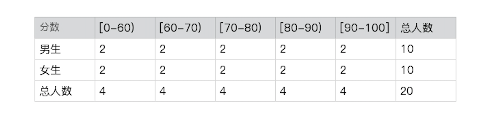
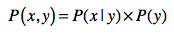
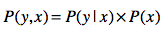
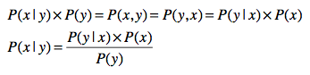
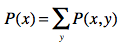
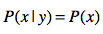
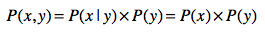
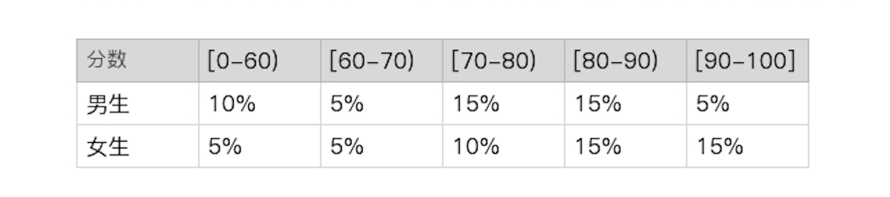

- 01 二进制：不了解计算机的源头，你学什么编程.md.html
- 02 余数：原来取余操作本身就是个哈希函数.md.html
- 03 迭代法：不用编程语言的自带函数，你会如何计算平方根？.md.html
- 04 数学归纳法：如何用数学归纳提升代码的运行效率？.md.html
- 05 递归（上）：泛化数学归纳，如何将复杂问题简单化？.md.html
- 06 递归（下）：分而治之，从归并排序到MapReduce.md.html
- 07 排列：如何让计算机学会“田忌赛马”？.md.html
- 08 组合：如何让计算机安排世界杯的赛程？.md.html
- 09 动态规划（上）：如何实现基于编辑距离的查询推荐？.md.html
- 10 动态规划（下）：如何求得状态转移方程并进行编程实现？.md.html
- 11 树的深度优先搜索（上）：如何才能高效率地查字典？.md.html
- 12 树的深度优先搜索（下）：如何才能高效率地查字典？.md.html
- 13 树的广度优先搜索（上）：人际关系的六度理论是真的吗？.md.html
- 14 树的广度优先搜索（下）：为什么双向广度优先搜索的效率更高？.md.html
- 15 从树到图：如何让计算机学会看地图？.md.html
- 16 时间和空间复杂度（上）：优化性能是否只是“纸上谈兵”？.md.html
- 17 时间和空间复杂度（下）：如何使用六个法则进行复杂度分析？.md.html
- 18 总结课：数据结构、编程语句和基础算法体现了哪些数学思想？.md.html
- 19 概率和统计：编程为什么需要概率和统计？.md.html
- 20 概率基础（上）：一篇文章帮你理解随机变量、概率分布和期望值.md.html
- 21 概率基础（下）：联合概率、条件概率和贝叶斯法则，这些概率公式究竟能做什么？.md.html
- 22 朴素贝叶斯：如何让计算机学会自动分类？.md.html
- 23 文本分类：如何区分特定类型的新闻？.md.html
- 24 语言模型：如何使用链式法则和马尔科夫假设简化概率模型？.md.html
- 25 马尔科夫模型：从PageRank到语音识别，背后是什么模型在支撑？.md.html
- 26 信息熵：如何通过几个问题，测出你对应的武侠人物？.md.html
- 27 决策树：信息增益、增益比率和基尼指数的运用.md.html
- 28 熵、信息增益和卡方：如何寻找关键特征？.md.html
- 29 归一化和标准化：各种特征如何综合才是最合理的？.md.html
- 30 统计意义（上）：如何通过显著性检验，判断你的A_B测试结果是不是巧合？.md.html
- 31 统计意义（下）：如何通过显著性检验，判断你的A_B测试结果是不是巧合？.md.html
- 32 概率统计篇答疑和总结：为什么会有欠拟合和过拟合？.md.html
- 33 线性代数：线性代数到底都讲了些什么？.md.html
- 34 向量空间模型：如何让计算机理解现实事物之间的关系？.md.html
- 35 文本检索：如何让计算机处理自然语言？.md.html
- 36 文本聚类：如何过滤冗余的新闻？.md.html
- 37 矩阵（上）：如何使用矩阵操作进行PageRank计算？.md.html
- 38 矩阵（下）：如何使用矩阵操作进行协同过滤推荐？.md.html
- 39 线性回归（上）：如何使用高斯消元求解线性方程组？.md.html
- 40 线性回归（中）：如何使用最小二乘法进行直线拟合？.md.html
- 41 线性回归（下）：如何使用最小二乘法进行效果验证？.md.html
- 42 PCA主成分分析（上）：如何利用协方差矩阵来降维？.md.html
- 43 PCA主成分分析（下）：为什么要计算协方差矩阵的特征值和特征向量？.md.html
- 44 奇异值分解：如何挖掘潜在的语义关系？.md.html
- 45 线性代数篇答疑和总结：矩阵乘法的几何意义是什么？.md.html
- 46 缓存系统：如何通过哈希表和队列实现高效访问？.md.html
- 47 搜索引擎（上）：如何通过倒排索引和向量空间模型，打造一个简单的搜索引擎？.md.html
- 48 搜索引擎（下）：如何通过查询的分类，让电商平台的搜索结果更相关？.md.html
- 49 推荐系统（上）：如何实现基于相似度的协同过滤？.md.html
- 50 推荐系统（下）：如何通过SVD分析用户和物品的矩阵？.md.html
- 51 综合应用篇答疑和总结：如何进行个性化用户画像的设计？.md.html
- 导读：程序员应该怎么学数学？.md.html
- 开篇词 作为程序员，为什么你应该学好数学？.md.html
- 数学专栏课外加餐（一） 我们为什么需要反码和补码？.md.html
- 数学专栏课外加餐（三）：程序员需要读哪些数学书？.md.html
- 数学专栏课外加餐（二） 位操作的三个应用实例.md.html
- 结束语 从数学到编程，本身就是一个很长的链条.md.html
- 捐赠
21 概率基础（下）：联合概率、条件概率和贝叶斯法则，这些概率公式究竟能做什么？
你好，我是黄申。
上一节我介绍了随机现象、随机变量以及概率分布这些比较简单的概念。为什么要学习这些概念呢？其实就是为了更精确地描述我们生活中的现象，用数学的视角看世界，以此解决其中的问题。
但是实际生活中的现象并非都像“投硬币”那样简单，有很多影响因素都会影响我们去描述这些现象。比如，看似很简单的“投硬币”，我们其实只是考虑最主要的情况，粗暴地把硬币出现的情况一分为二。比如说，不同类型的硬币是否会影响正反面的概率分布呢？站立的情况如何考虑呢？再比如说，在汽车速度的例子中，经过的交通路线，不同的路线是否会影响速度的概率分布呢？
一旦影响因素变多了，我们需要考虑的问题就多了。想要解决刚才那几个问题，更精确地描述这些现象，我们就需要理解几个新的概念，联合概率、条件概率以及贝叶斯法则。
从数学的角度来说，这些概念能描述现实世界中更为复杂的现象，建立更精细的数学模型。比如，我们后面要讲的朴素贝叶斯算法就是建立在联合概率、条件概率和边缘概率之上的。所以，这一节的内容也非常重要，你一定要认真学习并且掌握。
联合概率、条件概率和边缘概率
最近，我一直在操心儿子的教育问题，所以一直在研究他班级的成绩单。为了弄清我儿子在班级上的成绩排名，我向老师要了张全班成绩的分布表。

这张表中有两个随机变量，一个是学生的性别，一个是分数区间。我们很容易就可以得出，这个班中男生的概率是P(男生)=10⁄20=50%，90分及以上的学生的概率是P(90-100)=4⁄20=20%。那全班考了90分以上的男生的概率是多少呢？我们只要找到90分以上的男生人数，用这个人数除以全班总人数就行了，也就是P(男生, 90-100)=2⁄20=10%。
你有没有发现，“90分以上的男生”这个概率和之前单独求男生的概率或90分以上的概率不一样。之前只有一个决定因素，现在这个概率由性别和分数这两个随机变量同时决定。这种由多个随机变量决定的概率我们就叫联合概率，它的概率分布就是联合概率分布。随机变量x和y的联合概率使用P(x, y)表示。我算出了这个例子里所有的联合概率分布。

这里的例子只有两个随机变量，但是我们可以很容易扩展到更多的随机变量，比如再增加一个学科的变量。那么，我们就可以观测这样的数据：“班级上女生的数学考了90分及以上的概率是多少？”，其中女生是关于性别变量，数学是关于学科变量，而90分及以上是关于分数变量。
那么联合概率和单个随机变量的概率之间有什么关联呢？
对于离散型随机变量，我们可以通过联合概率P(x, y)在y上求和，就可以得到P(x)。对于连续型随机变量，我们可以通过联合概率P(x, y)在y上的积分，推导出概率P(x)。这个时候，我们称P(x)为边缘概率。
除了边缘概率的推导，多个变量的联合概率和单个变量的概率之间还存在一个有趣的关系。在解释这个关系之前，让我先来介绍条件概率。
条件概率也是由多个随机变量决定，但是和联合概率不同的是，它计算了给定某个（或多个）随机变量的情况下，另一个（或多个）随机变量出现的概率，其概率分布叫做条件概率分布。给定随机变量x，随机变量y的条件概率使用P(y | x)表示。
回到成绩分布的案例。我能理解在不同的阶段，男生和女生的成绩可能无法直接相比。所以我更关心的是，自己儿子和其他男生相比是否落后了。那么我的脑子里就产生了这样一个问题：“在男生中，考90分及以上的概率是多少？”。
仔细看，这个问题和前面几个有所不同，我只关心男生这个群体，所以解答应该是找到考了90分以上的男生的人数，然后用这个人数除以男生总人数（注意，不再是全部总人数）。根据上述表格的数据来计算，P(90-100|男生)= 2⁄10=20%。
解释清楚了条件概率，我就可以列出概率、条件概率和联合概率之间的“三角”关系了。简单地说，联合概率是条件概率和概率的乘积，采用通用的公式来表达就是：

同样的道理，我们也可以得到：

我们仍然可以使用成绩的案例，来验证这个公式。为了更清晰地表述这个问题，我们使用如下的符号：
|男, 90-100| 表示考了90分以上的男生人数；
|男| 表示男生人数；
|全班| 表示全班人数。
男生中考了90分及以上的概率为P(90-100 | 男生) = |男生, 90-100| / |男生|，全班中男生的概率为P(男) = |男生| / |全班|。如果我们将p(90-100 | 男生) 乘以 P(男) 会得到什么结果呢？
(|男, 90-100| / |男生|) * (|男生| / |全班|) = |男, 90-100| / |全班|
咦，这不就是全班中男生考了90分及以上的联合概率吗？其实，概率、条件概率和联合概率之间的这种“三角”关系，也是著名的贝叶斯定理的核心，下面我来详细解释什么是贝叶斯定理，以及它可以运用在什么场景之中。
贝叶斯定理
我们假设有这样一个场景，我想知道男生考了90～100分的概率有多少，来评估一下儿子在男生中算什么水平。可是老师出于隐私保护，并没有把全班数据的分布告诉我，她说道“我可以告诉你全班考90～100分的概率，以及90～100分中男生的概率，但是不能告诉你其他信息了”。这个时候，贝叶斯定理就可以帮上忙啦。
刚刚我们提到：

所以就有：

这就是非常经典的贝叶斯法则。为什么说经典呢？是因为它有很多应用的场景，比如朴素贝叶斯，你可以多多熟悉一下这个公式。在这个公式中，还包含了先验概率（Prior Probability）、似然函数（Likelihood）、边缘概率（Marginal Probability）和后验概率（Posterior Probability）的概念。
在这里面，我们把P(x)称为先验概率。之所以称为“先验”，是因为它是从数据资料统计得到的，不需要经过贝叶斯定理的推算。
P(y | x)是给定x之后y出现的条件概率。在统计学中，我们也把P(y | x)写作似然函数L(y | x)。在数学里，似然函数和概率是有区别的。概率是指已经知道模型的参数来预测结果，而似然函数是根据观测到的结果数据，来预估模型的参数。不过，当y值给定的时候，两者在数值上是相等的，在应用中我们可以不用细究。
另外，我们没有必要事先知道P(y)。P(y)可以通过联合概率P(x, y)计算边缘概率得来，而联合概率P(x, y)可以由P(y|x) * P(x)推出。针对离散型和连续型的边缘概率推导分别如下：

而P(x|y)是根据贝叶斯定理，通过先验概率P(x)、似然函数P(y | x)和边缘概率P(y)推算而来，因此我们把它称作后验概率。
回到刚刚的案例，我可以通过这样的式子来计算男生考90-100分的概率：
P(90-100 | 男生) = {P(男生 | 90-100) * P(90 -100)}/ P(男生)
我只需要数数看，班上男生有多少、总人数多少，就能算出P(男生)。在加上之前，老师告诉我的P(男生 | 90-100)和P(90 -100)，就能推算出P(90-100 | 男生)了。这个例子就是通过先验概率，推导出后验概率，这就是贝叶斯定理神奇的地方，也是它最主要的应用场景。
随机变量之间的独立性
说到多个随机变量的联合和条件概率，你可能会产生一个问题：这些随机变量是否会相互影响呢？比如，性别和分数之间有怎样的关系？性别是否会影响分数的概率分布？在之前的成绩分布表中，我们可以得到：
p(90-100 | 男生) = 20%
p(90-100 | 女生) = 20%
p(90-100) = 20%
所以，p(90-100 | 男生) = p(90-100 | 女生) = p(90-100)，也就是全班中考90分及以上的概率、男生中考90分及以上的概率、以及女生中考90分及以上的概率，这三者都是一样。以此类推到其他的分数区间，同样如此，那么，从这个数据上得出的结论是性别对考分的区间没有影响。反之，我们也可以看到p(男生 | 90-100) = p(男生 | 80-90) = p(男生 | 70-80) = … = p(男生) = 50%，也就是说考分区间对性别没有影响。这种情况下我们就说性别和分数这两个随机变量是相互独立的。
相互独立会产生一些有趣的现象，刚刚我们提到：

另外，将p(x | y) = p(x)带入贝叶斯公式，就可以得出：

变量之间的独立性，可以帮我们简化计算。举个例子，假设有6个随机变量，而每个变量有10种可能的取值，那么计算它们的联合概率p(\(x\_{1}\), \(x\_{2}\), \(x\_{3}\), \(x\_{4}\), \(x\_{5}\), \(x\_{6}\))，在实际中是非常困难的一件事情。
根据排列，可能的联合取值，会达到10的6次方，也就是100万这么多。那么使用实际的数据进行统计时，我们也至少需要这个数量级的样本，否则的话很多联合概率分布的值就是0，产生了数据稀疏的问题。但是，如果假设这些随机变量都是相互独立的，那么我们就可以将联合概率p(\(x\_{1},\) \(x\_{2}\), \(x\_{3}\), \(x\_{4}\), \(x\_{5}\), \(x\_{6}\))转换为p(\(x\_{1}\)) * p(\(x\_{2}\)) * p(\(x\_{3}\)) * p(\(x\_{4}\)) * p(\(x\_{5}\)) * p(\(x\_{6}\))。如此一来，我们只需要计算p(\(x\_{1}\))到 p(\(x\_{6}\) )就行了。
不过，班主任刚刚打电话给我，说之前的数据表格有点笔误，实际的分布应该是这样的：

你再推算一下，就会发现p(分数 | 性别) = p(分数)和 p(性别 | 分数) = p(性别)并不成立，所以两者不再是相互独立的。所以下面这个式子就不再成立了，这点你在计算的时候需要注意。
在实际项目中，我们会假设多个随机变量是相互独立的，并基于这个假设大幅简化计算，降低对数据统计量的要求。虽然这个假设通常是不成立的，但是仍然可以帮助我们得到近似的解。相比较实现的可行性和求解的精确度，可行性更为重要。在讲解朴素贝叶斯方法中，我会充分利用这一点，从有限的训练样本中构建分类器。
总结
这一讲我继续讨论了概率分布相关的内容，不过这次的重点是多个随机变量相关的联合概率、条件概率、边缘概率。这里概念有点多，但是都很重要，因为这三者之间的推算关系，直接构成了贝叶斯定理的核心，所以你要花点时间理解并记住它们。
而贝叶斯定理定义了先验概率、后验概率和似然函数，后验概率和似然函数及先验概率的乘积成正比关系。此外，通过多个变量之间的独立性，我们可以简化联合概率的计算问题。贝叶斯定理和变量之间独立性的假设，对后面理解朴素贝叶斯算法很有帮助。
如果有一定数量的标注数据，那么通过统计的方法，我们可以很方便地得到先验概率和似然函数，然后推算出后验概率，最后依据后验概率来做预测。这整个过程符合监督式机器学习的模型训练和新数据预测这两个阶段，因此朴素贝叶斯算法被广泛运用在机器学习的分类问题中。下一节中，我们详细讨论这个算法。
思考题
大年三十晚上，爷爷奶奶发红包。爷爷准备的红包是4个50元的，6个100元的。奶奶准备的红包是8个50元的，4个100元的。全家人随机抽，你运气很好，拿到一个100元的红包。请问这个红包来自爷爷的概率有多少？来自奶奶的概率有多少？
欢迎留言和我分享，也欢迎你在留言区写下今天的学习笔记。你可以点击“请朋友读”，把今天的内容分享给你的好友，和他一起精进。
© 2019 - 2023 Liangliang Lee. Powered by gin and hexo-theme-book.